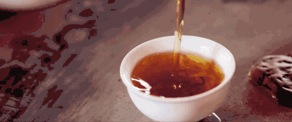
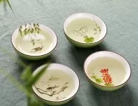
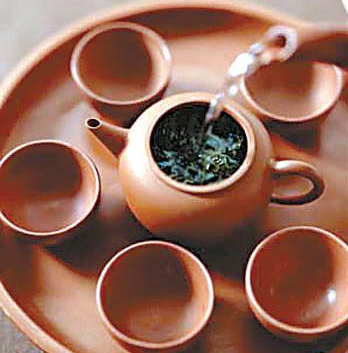

茶薄人情厚，我独爱功夫茶
“闽中茶品天下高,倾身事茶不知劳。”
—— 苏澈
潮汕功夫茶的介绍

潮汕功夫茶即潮汕茶道，是我国古老的茶文化之一，在潮汕当地更是把茶做为了待客的最佳礼仪并加以完善，这不仅是因为茶在许多方面有着养生的作用更因为自古以来茶就有“待君子，清心身”的意境。
所谓工夫茶，并非一种茶叶或茶类的名字，而是一种泡茶的技法于茶具的结合。其泡茶的方式极为讲究。操作起来需要一定的工夫和特有的茶具，此功夫，乃为沏泡时的学问，品饮的工夫。
功夫茶的茶具
饮茶离不开茶具，潮汕功夫茶所用的茶具最少也需要十种：
茶壶、茶杯、茶洗 、茶盘、茶垫、水瓶与水钵、龙缸、红泥小火炉、砂铫、羽扇与钢筷。

功夫茶的茶艺
标准的功夫茶艺，有后火,虾须水(刚开未开之水),捅茶,装茶,烫杯,热罐(壶),高冲,低斟,盖沫(以壶盖将浮在上面的泡沫抹去),淋顶十法。

潮汕功夫茶一般主客四人，主人亲自操作。
首先点火煮水，并将茶叶放入冲罐中，多少以占其容积之七分为宜。待水开即冲入冲罐中之后盖沫。洗过茶后，再冲入虾须水。
斟茶时，茶杯并围一起，以冲罐巡回穿梭于四杯之间,直至每杯均达七分满。此时罐中之茶水亦应合好斟完，剩下之余津还需一点一抬头地依次点入四杯之中。潮汕人称此过程为“关公巡城”和“韩信点兵”。

功夫茶的风俗人情
茶冲出来后，一般是冲茶者自己不先喝，请客人或在座的其他人喝。
如果盘中有三个盅，那么先拿哪一盅也大有讲究。
一般是顺手势先拿旁边一盅，最后的人才拿中间一盅。如果不分青红皂白，在两旁茶盅未有人端走之前，就先拿了中间一盅，不但会被认为对主人的不敬，也是对在座其他人的不尊重。同时，你喝了一盅之后，一般还要让在座的人每人喝过一盅，才喝第二轮。
功夫茶之所以在潮汕人的生活中扮演着重要的角色，不仅仅是因为功夫茶独特的风味，更是潮汕人已经将他作为一种生活习惯，将他作为交友、增进感情的桥梁。
首先点火煮水，并将茶叶放入冲罐中，多少以占其容积之七分为宜。待水开即冲入冲罐中之后盖沫。第一冲杯,以初沏之茶浇冲杯子，目的在于造成茶的精神,气韵彻里彻外的气氛。洗过茶后，再冲入虾须水。